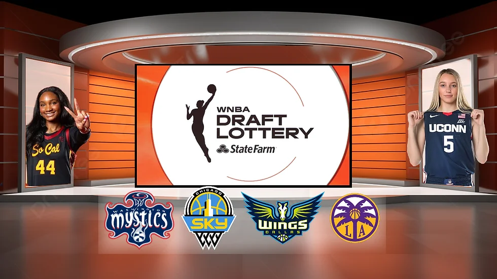

The WNBA has revealed the results of the 2025 draft lottery, giving the league's four worst-performing teams a glimpse at their future. The lottery determines the order in which these teams will pick in the upcoming draft, where top prospects are expected to make an immediate imppact. As the excitement builds, these teams are poised to add key players to their rosters.
The first pick in the upcoming WNBA 2025 draft goes to the Dallas Wings. The second pick goes to the Los Angeles Sparks. The third pick goes to the Chicago Sky. Lastly, the fourth pick goes to the Washington Mystics.

Nika Mühl, the talented point guard for the Seattle Storm, recently suffered an ACL tear, a tough blow for both her and the team. Despite the setback, she remains determined and focused on her recovery. Known for her resilience and strong work ethic, Mühl is already on the road to rehabilitation, working tirelessly to regain her strength and return to the court. While the road ahead may be challenging, her commitment and passion for the game will undoubtedly fuel her comeback. Fans are eagerly anticipating her return, knowing that Nika's determination will drive her to come back stronger than ever.
Aaliyah Chavez, a standout guard from Monterey High School in Lubbock, Texas, is currently the top-ranked prospect in the country for women's basketball. Known for her explosive scoring ability, sharp basketball IQ, and leadership on the court, Aaliyah has quickly risen to the top of the national rankings. Her combination of athleticism, court vision, and skill makes her a complete player who can dominate on both ends of the floor. College programs from across the nation are vying for her commitment, and it's no surprise given her potential to make an immediate impact at the next level. With her drive and work ethic, Aaliyah Chavez is set to be a future star in women’s basketball, and all eyes are on her as she prepares for the next chapter of her already promising career.